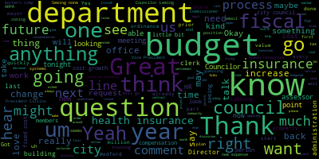
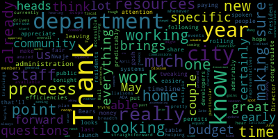
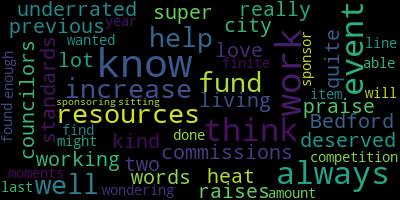

[Bears]: City Council, Committee of the Whole, May 1st, 2024. Mr. Clerk, please call the roll. present, five present, two absent. The meeting is called to order. There'll be a meeting of the Medford City Council Committee of the Whole at 6 p.m. in the City Council Chambers, second floor, Medford City Hall, 85 George P. Hassett Drive, Medford, Massachusetts, and via Zoom. To submit written comments, please email ahertovice at medford-ma.gov. The purpose of this meeting is to discuss paper 24-045, the annual budget process for fiscal 2025. And this is our fourth preliminary budget meeting of the fiscal 25 budget process. We have the following departments present. We have our human resources, also health insurance and workers comp, assessor, building, diversity, equity, inclusion, and treasury. Is there anyone who would like to jump to the front of the line if they need to? Or are we comfortable going in order? Seems like everyone's okay with going in order, so we'll go in order, and I will start with human resources, health insurance, and workers comp. I'm not sure, I think you might just, Lisa, might just be doing the human resources part, and then maybe Bob and Courtney, are you doing health insurance and workers comp? Oh, you're doing that too, great. Ah, they're your muscle, okay. I was like trying to suss out why you were here. Great, so I will go over, We'll do HR department, then we can do health insurance, then we can do workers comp. I'll just go over the top line really quickly. The fiscal 25 proposed budget for human resources, $267,537.23 is up from $202,357 in fiscal 24. And according to the change sheet, there are two increases here. One is, and again, this is in the fixed cost growth area, moving an ARPA-funded position onto the general fund budget, it looks like. And the second is the, and it's the only item that's a new expense, is implementing safety compliance management leadership disciplinary trainings and a department head training. Great. So I like to just ask for kind of four-ish questions or three questions and a statement. and you can take it from there director just let us know anything else you'd like us to know about the budget I did a very very short summary so feel free to share anything more that you'd like to share and then we'd love to hear about any programs that you did not request this year that you may like to request in the future, any staffing really, any expense that you envision your department needing but that we weren't able to request this year. And then we'd love to hear about what you have done over this current fiscal year 24, what your plans are for the next fiscal year. And then just describing the process, which I've been doing every meeting since this is a newer This is a brand new process for the city. We started with, this is following our new budget ordinance, which was just ordained last night by the city council. And we had been following it though in advance, and we appreciate the administration for working with us on that. In March, the city council developed budget recommendations and submitted them to the mayor. And now we are holding preliminary budget meetings with our department heads, which is a departure from past practice. We're holding them before the final submission of the budget by the mayor at the end of May. And then we will consider the budget at that time and how that is directly relevant to you. If there's anything that changes significantly from what we've talked about tonight, by the in the actual budget presentation, either we might invite you back or the administration can say we want to come back with the department. And then we can hear more from you in June. But if not, then this may be the one time that you're here with us for the budget session. So that's really it. As I said, all you just what anything more about your budget, anything you see that in the future that wasn't in this budget, and then we'd love to hear about the the past and future of your department's work. Are we on?
[Lisa Crowley]: All right, so we're gonna be bringing on a personnel coordinator for July 1st. That again is taking the place of part-time funded upper position that we have now. We were also able to have some funds in our budget for our training. We are bringing on JJ Keller for DPW safety training. We are partnering with Trilliant, who is going to be providing our compliance training. There is gonna be online training and classroom training programs that they'll be able to support. Basically, the budget is what it is. There's not a lot of surprises here in HR. What we may have asked for didn't because of the budget, may have been another part-time position that hopefully maybe next fiscal year we'll be able to add to that budget. And really, as the years go on, training increases, so it would just be more funding for training. But other than that, our budget is pretty supportive right now. Great.
[SPEAKER_10]: Yeah, so we're looking forward to next year, and we're excited for next year.
[Lisa Crowley]: All right, so the HR office has been very busy collaborating, especially with the DEI office and our finance department. We were able to work with finance and I appreciate all the help they gave us to put together what we're calling the ENSO project. And that is currently the life cycle of every city employee that we have currently. from their demographics, to their salaries, to what step they're on, to what union they might be in, what department, just everything about that employee. We usually have to look through different systems to get one complete picture. And right now we have an entire spreadsheet, which is multiple pages and colorful, that gives us everything we need to know about every employee. So if somebody comes up and says, I need to know about John Jones, we have a full history of him without having to go into his personnel file every single time. So that's being updated in real time. So as status changes for an employee, we automatically go into that ENSO project and update the status of that employee. So it's fluid. It will be updated as, you know, time goes on for every single employee. So it's pretty exciting to be able to go to one place and find all the information we need. We also have been very busy with hiring. We had about 10 emergency responders this year, about 28 city staff personnel, including recently over the last week or two, a new deputy DPW director and an elections manager. They'll both be starting over the next couple of weeks. So we're very excited to have them on board. And we've also been able to have several promotions within the fire department over the last couple of weeks. So we're very excited about that, too. We are also currently working with the Collins Center on a comp and class study. and that is going to be implemented over the next couple of months. Hopefully they're gonna be working on our FLSA classifications, compensation, updating the job descriptions to really reflect what the jobs are these days. Our job descriptions are very old. Some are from the 80s. So they're not very reflective of what the actual position is now. So we're setting up individual meetings with employees and the call-in center. They're gonna go through what their job description actually is. to what it looks like on paper. Then we're going to go through the department heads to make sure that they, um, agree with what we're working with with the employees and come up with comprehensive job descriptions for every employee in the city. We have been working on a new hire process with our DEI director. So between Frances and myself in our offices, we've come up with a comprehensive system on a new hire process, which is pretty detailed. It outlines every step of the process from posting to hiring and at what levels each individual department head would be responsible to make sure things are in place at the right time, who will be on the hiring process, who will be taking care of setting up interviews, coming up with interview questions, and making sure that we're complying with state and federal law. We've also developed streamlined processes on our postings and our recruiting. We're working with better teams and jobs along with MMA to make sure that we get the most qualified personnel for the city. We are working on internal processes and procedures. We just put together an internship policy. so that all departments that are working with interns will have a streamlined policy to get those staff on board. We came in and completed an I-9 audit of the city, making sure that all our I-9s were compliant. We found that many were not, so we were able to go back and rectify those and have notice with each for the state, just in case we ever got audited. And we're also working on the CORI process every three years, Individuals must be recorded. Any employee must be recorded. It hadn't been done in the past. So we've put together a system so that every three years, everybody gets quarried just to be in compliance with the state. we have established a new employee announcement program. So when new employees would come on, nobody would know who they were. They'd be walking through the halls and it was like, who is that? So now we do a spotlight for all new employees. So everybody kind of knows there's a new director coming in or there's a new clerk coming in depending at all levels. So hopefully that'll help the employee get acclimated with their surroundings and people can go up and introduce themselves and make sure that they feel welcomed with the city. We are working with JJ Keller on a comprehensive safety program with the DPW staff that I have mentioned during the budget process. We're also expanding transparency with the HR office where we are now posting all newly ratified CBAs on our website. That was not done in the past that I know of. And then also any city policies that we're starting to implement will be online. And having the CBAs online really helps with the FOIA requests. So now we can just direct people to the website if they're looking for anything on any of our contracts. We talked about partnering with Trilliant. We're working with our DEI office as well on that. This is a background process where we have compliance training, preventing harassment, sexual harassment, creating positive work environments, being an ally, civility in the workplace. It really has a DEI and HR lens to it. everybody will have an individual login, and then our DEI office will also conduct classroom trainings, just in case somebody's not really comfortable with using computers or being online. There'll be a classroom component for that, so everybody in the city can get trained at the level that they're at right now. And we're also working on streamlining a lot of our processes and programs, working really closely with the DEI office because our office is kind of intertwined on a lot of our programs and processes. So it's been very helpful. And Francis has been wonderful working with us on that. And lastly, we have implemented partnering with Armstrong, our CPR training. You may have already saw the emails. If not, please register. We're having a training on May 15th and June 5th, and I think that's a positive step in the right direction. So I don't know if you have any questions on any of that, or I'll just kind of get into our goals. Perfect. So we want to continue working with DEI office and finance to make sure that we're giving our employees a comprehensive start and process through their employment. We want to continue creating an inviting environment so our employees feel supported, they feel heard, and they feel valued. Usually, when people come into my office, they feel like they come into the principal's office, and we really want to make them feel welcomed, so that they don't feel like it's always, what did I do wrong? We want them to be able to come in and talk to us if they have problems or issues, or even if they have ideas of how to better support them. So our office is always open, and we hope that they start using it for those issues. So we also want to build lasting and respectful relationships with our union representatives. I think the more collaborative we can be and the more respectful we can be at the table, the more we can get things done. And I think we're really moving in that direction. We have been building really good relationships with our union representatives and I appreciate their participation in all the processes that we've been going forward with them. We want to continue to grow and cultivate our awareness of how to better support our employees and our staff and how to better communicate with them. Everybody communicates at a different level, and we want to make sure that we're being respectful of how to come to them and how for them to come to us to communicate what their needs are. We are also working on an HIRS system that is going to help automate our HR processes and procedures and get everybody to be on boarded through automation instead of all this paper that we've been using. So we're hoping to get that implemented. So many others. We're working on a handbook with our DEI office. Our handbook, we have one, but it's old and it's antiquated and some of it's outdated. So we're working on a new comprehensive handbook and a policy tracking system so that we can make sure that our policies are up to date and we're complying with state and federal law. So and aside from applying for grants that we can get through the HR office to help us support some of these initiatives. That's pretty much what we're going to be working towards come this fiscal year.
[Bears]: Great. Thank you, Director Crowley. Any, um, comments or questions from the council?
[Scarpelli]: Thank you. Thank you so much, Director. I think that this is so exciting, hearing so many positive moves from our HR department. Maybe this might have been for the Executive Council President, but I just might have forgotten, but any movement or any thoughts of I know one of our strong initiatives is the City Solicitor and the Assistant City Solicitor's position. Have we talked about maybe increasing that CAF to bring in candidates who will actually look at that as an appealing position? I know it's really low and from the people that I've talked to they won't even consider even applying in Bedford. So this might not be for this conversation, but I did want to put it on our to-do list if we can, whether it's a form of a motion. But again, I didn't want to leave this out. I know it's an important agenda piece that we focus on.
[Bears]: you. Yeah, um, comment on that.
[Lisa Crowley]: So I'd be happy to, um, speak with the mayor and the chief of staff on any initiative we can have. But we are working on that class study, and we're hoping that that might identify some of the outliers. And it would include the solicitor and city solicitor.
[Scarpelli]: Thank you. Thank you.
[Bears]: our city council budget recommendations, which we submitted March 20th to the administration. And we did receive a response from the mayor that we're looking at putting a paper before the council around the solicitor. So, you know, I think that is probably going to be around the budget time and the personnel ordinance. But I did want to say that that was that we received our budget recommendation. So we did get the administration's response on that, um, and agree with Councilors Scarpelli. That's a priority, and we're open for more details, but also just wanted to highlight that that was, um, a benefit of our new budget process that we did submit that recommendation, and I will go to Councilor Leming, and then I do have a question as well. Councilor
[Leming]: So not to open this can of worms again, but I just like to kind of, well, I just like to, to understand, um, some, uh, some parts of the HR and, uh, back pay process. So when, so there, there are complaints about, um, employees receiving retroactive pay. Could you just, um, just talk about like the reasoning behind some of those delays, like, you know, I've heard outdated systems. And so sort of what happened. from your perspective there?
[Lisa Crowley]: Sure. So, yes, we do have integrated systems, so it did make it very difficult. What we tried to do is we ratified a contract. Those are the retros we worked on first, just to keep everybody in the same system. We didn't want to jump one group before another if we'd ratified their contract first. It was painstaking, let me tell you. Bob was a big component of that. He actually had to go through every single employee's payroll for every single year, we had an increase, line by line by line. And then see where they had a step increase or where they had a change or where they had a promotion, if they had overtime, because overtime was affected. So it seems like it's a simple thing. It's not as easy as taking everybody's salary, adding 2%, 3%, 5%, whatever it was. you really had to do individual employee by employee by employee. So once Bob was able to get that information, then we sent it to our payroll office. And then our treasure collector actually went through every line by line by line to make sure that it was exactly the way it should be. And then it came to me for a spot check, and then it went to our chief of staff for a spot check. And I believe Horton may have looked at some of them too. So it was very painstaking. I mean, just for the fire department, I think it was over several hundred pages, because one employee might have four pages, and that's four pages of spreadsheets, because some of them have been here.
[Leming]: And would a more updated software system be able to help with that? Because it sounds like you were doing everything by hand. Everything was by hand. Wow.
[Lisa Crowley]: And I don't mean by hand. It was spreadsheets, but we had to look at everything individually. And it was from two systems. It's not like we just have one system where everything was held. So it did take long, and I will admit that. But it wasn't by design. It was by necessity. Because I was afraid if we didn't pay somebody what they were supposed to get paid, then we would have to stop that process. So we wanted to be as accurate as we could.
[Leming]: That makes sense. Thank you.
[Lisa Crowley]: You're welcome.
[Bears]: Thank you, Councilor Leming. And my question is, jumping back to the classification and compensation study, I heard basically that a bunch of the classification piece of that is being implemented administratively over the next few months, so I think that's great. Always glad to hear something from the 80s or the 90s is being brought to today. I think that's really good. And the more we do that, the less we'll have to do it in the future, right? In that groove. On the compensation side of the study, the council has had a lot of questions around compensation. Councilor Scarpelli raised one about the solicitor's office, the law office, and whether the pay and the compensation is sufficient to bring on staff. And our experience with that over the last couple of years seems to be that it isn't. you know, but I think in general, the council is very interested in updating the personnel ordinance, something that we have talked about as getting the personnel ordinance back on Muni code. And we didn't want to do that until we had worked through the process of, um, you know, making sure it was accurate and getting all the figures correct. And I know that's part of the compensation element of the study. So I was just interested to know, um, what the timeline is on that part of the project.
[Lisa Crowley]: Okay, so right now we're in the interview stage. So we did have all our employees and department heads actually go through the actual job descriptions and then fill out a questionnaire about what they actually do compared to what's on that job description. I mean, some of them are so old, it talks about typewriters and mimeograph machines, which we don't have anymore. And so right now we are setting up individual interviews with the staff. with the call-in center. So we're hoping by June that we have something presented to us from the call-in center. It's gonna take about six more weeks or so, I would think.
[Bears]: And that would include the compensation? It's all one package. Okay, great. And then I assume that we would be able to see it? Yeah, of course. And then guessing that we'll talk about updating the personnel ordinance
[Lisa Crowley]: I would be happy to help you with that too.
[Bears]: I will say that we have done some mini
[Lisa Crowley]: Like when we're hiring new people, we always kind of look at that when we're bringing on new people. We're not that far off, which is a good thing.
[Bears]: Okay. That's great. Yeah. And I think for us, you know, for me, I mean, there's some obvious positions where it seems to be off scope.
[Lisa Crowley]: Somewhere right where we should be right in the middle. We never want to be at the top because, you know, we're not the biggest community, but we never want to be at the bottom either.
[Bears]: Right. And so that's great. I think for us, the other is just the logistical piece of people always ask us, so how much do these people get paid or what's the salary rate? I'd love to be able to start pointing them again. I don't know.
[Lisa Crowley]: It seems- You can point them to my direction. I can let them know.
[Bears]: Yeah, and I do do that. I'm happy to do that. But it seems at some point prior to this council being on the council and prior to the clerk and prior to having HR and prior to this mayor's administration, the personal ordinance was pulled off of the ordinances website. I don't know why. So I'm guessing probably because it was updated so frequently, we now have Let's say the most favorable explanation would be that it was being updated so frequently that we didn't want to pay the current page cost. We have a better contract with MuniCode now, so it's much easier to update the website. So if that was the reason, we'd solve that.
[Announcer]: We'll go with that one.
[Bears]: Great. Any further questions on the HR side of things before we jump into health insurance and workers' compensation? Councilor Scrively, do you have your hand raised? I think not.
[Scarpelli]: I think that may be- Yeah, sorry about that. It was up before, I apologize.
[Bears]: I thought so, but Adam was doing his due diligence. Great, so that's the human resources piece of the budget. Thank you for that.
[SPEAKER_10]: Okay, you're welcome.
[Bears]: Next is insurance. And this is budgeted fiscal 2024, 25, oh wow, 25,500,000. And it's going up to $28,255,000 for fiscal 25. And it looks like the main driver of this is a $2.725 million increase in the health, dental, and life insurance budget. And I mean, that is the vast majority of this budget already. but also $120,000 in insurance premiums. So obviously, especially in any budget, this would be a significant increase, especially seeing it this year. It is a large chunk already of the $9 million. dollars that is available above last year's general fund budget. So if you wanna talk about why that's happening, I understand we did talk about it a little bit with Bob, Director Dickinson last week, but I understand it's because the GIC rates are going up. But if you wanna get into that more.
[Lisa Crowley]: Yeah, so I mean, I can talk about the increase. I can't talk about what was forecasted last year, because I wasn't here. So we do have an average of 10% increase over the GIC rates. So that's 10% for every single employee that's on that program. That is a big... I don't think we've had increases. over the past couple of years, and that's why usually you get small increases or you don't get any, and then one year you get hit with a bomb, and then it settles down a little. So we did have an average of 10% increase on the GIC side, as well as a 6 1⁄2 or 6.25% on the dental. So I mean, really, it's hard. Health insurance is fluid, so we don't know from day to day if we're gonna have 10 people that might come to us and say, my husband or my spouse or whatever just lost their job, we need your insurance. That sends us right over the top right there. We could in another month have 10 come in and say, my spouse just got a job, so now I don't need the insurance. So it's really hard to pinpoint an actual number because it's so fluid. So what we did is we took what we spent, currently, and I believe these are from March 27 of 24 numbers. So we took what we spent till then, divided it by the eight and a half months to project what it's gonna cost for the next couple of months, and then increased every single line. We went through every single employee and added the 10% and the 6.25% wherever that fell. And that's just the actual number we came up with.
[Bears]: Got it. And it is obvious, you know, rates are going up 10%, that'll go up 12%, so that's pretty much in line with this estimate. Is there anything other than the health insurance, the other insurance premiums, or any other thing you want to touch on? Did you use the same process to kind of arrive at those figures?
[Lisa Crowley]: We did. We used the same process. And it's the same work as just with the workers' comp when we get there, too. It's fluid, so we have to do our best with estimating and projecting what we have in front of us and what we think might be coming in the future. We know we had 28 new employees. We know we're going to have another 10 or 15 or 20 this year. So we have to almost plan that they're all going to want the insurance. Right. Right. Better that they don't. And we have the money than they do. And we don't. Right.
[Bears]: So, yeah, I know the organization that I work for in my full time job, we we plan for everybody to take family insurance.
[Lisa Crowley]: That's right. And then we are grateful if they don't look high and hope it goes low.
[Bears]: Yeah. And so you're, when you talk about budgeting for you're talking about like just the vacant positions, you're expecting that they would all be filled and everyone would take the biggest health insurance they could take.
[Lisa Crowley]: That's the safest way to plan it. I mean, you could say it's an 80 20 split and we hope for that, but I'd rather have, you know, the number is really the number, the way we forecast insurance. It's the best pinpointing we can do.
[Bears]: Any questions on the insurance budget or fiscal 25? seeing none, I'm just going to make one comment, which is that I want to note again, you know, hopefully we have that averaging out over years, but, you know, 10, 12%, 11% is more than 2.5%. And when we have the growth of costs like this, it eats up whatever the city is able to raise in the levy. We're spending, you know, we're so far through this budget, I think there's been one department that has had a new expense and it may have been HR for $21,000 for training. Everything else has been a fixed cost growth, a union contract or health insurance costs or increased cost of office supplies, paper and ink, you know, and it's more than 2.5%. So when we talk about what the city is able to do every year, we are doing more with less. Our costs are going up faster than our revenues are increasing. And it means that we are at best maintaining what we have and not really adding very much. So I just want to make that point, because as we go through this process and we see budget after budget after budget, all we can do is keep what we have, even though we hear from departments. And it's no slight against anyone. It's systemic. We have a systemic revenue shortage. every department needs one more person to take on a function, or a halftime person, or new programming, or wants to launch something that could help benefit our residents, and we can't implement it. And so this seems to be the big driver this year with the insurance, with $3 million of our $9 million going towards that. But I just wanted to raise that point.
[Lisa Crowley]: And I definitely understand that I just not that this department is any more valuable than others, but we're so compliance driven. Yeah, that the training that we need is compliance driven. It's not the HR director saying, oh, I'd like to have, this is really all compliance and that we're just trying to make sure the city is complying with state and federal law.
[Bears]: Right, and that point wasn't the point I was, you know, I wasn't trying to spite you at all.
[Lisa Crowley]: But I just want anybody out there listening that, you know, HR is getting what they're getting. We're actually the minimum to get the compliance training that we're actually needing.
[Bears]: And that's the thing, you know, we're scraping for essentials. Yeah, I get it.
[Leming]: Is it, this is just a question coming from a councilor going through his first budget process, but is it typical in other cities to have between 10 to 15% of the city's budget going towards health and or life insurance? Like, is that it? That's the biggest ticket items. That's typical, okay. Thank you.
[Bears]: Thank you, Councilor Leming. Any further questions on health insurance or I guess the insurance department, which is all of our different insurances? All right, to workers comp, bottom line, if I can flip the page, we budgeted fiscal 24, 675,000, budget for fiscal 25, 788,000. That's an increase of 17%. And that is driven, looking again, like by the actuals process that you just talked about that we did for health insurance. So.
[Lisa Crowley]: I'm coming with all the good news. So again, I can only talk about this year and what we're doing, but again, workers' comp is another piece that you can't pinpoint. It's fluid. This year, we may have had more incidences than they had in the past. So when they were forecasting for last year, they were working on different numbers. Us forecasting for this coming fiscal year, we're working on actual numbers that we have now. So again, That's something where we could have all our workers' comp folks come back and say, we're healthy, we can come back to work. And the number goes down. And in the same instance, you could have some kind of, I don't even want to say the word, tragedy, where you have multiple employees now having to come back on workers' comp. So it's just fluid. It's really hard to pinpoint. We had some settlements that we had on the books for a very long time, which I'm happy to say we were able to settle and stop that bleeding right there. But again, it's ever fluid. There's no way to actually pinpoint. We know what we pay now. We know what we're paying, as you'll see in the actuals as of March 27th, those actual numbers. We then have to take what's left for the upcoming months, because we have to assume that those people are still gonna be on, most of them will still be on for the next couple of weeks of workers' comp, and factor out what we're gonna come into for fiscal year 25.
[Bears]: Got it. Any questions on workers comp? Councilor Scarpellilli?
[Scarpelli]: No, I'm sorry, Councilor. I put my hand up and direct your answer to the question. Thank you so much.
[Bears]: Great. Thank you. Just one clarifying question, and maybe it might be, you may have kind of already answered it, but I just want to fully understand it. So when you're talking about a workers' comp claim, we're paying out of the workers' comp, and then you're saying when there's a settlement, it comes off. Are those settlements, you know, does that affect our insurance side of things at all? Like, are those settlements paying insurance?
[Lisa Crowley]: Our health insurance side of things?
[Bears]: Not necessarily health insurance, but like other insurance, like liability insurance. Like, are we paying out any of those settlements? Is there a cash payment, and is that coming? Yeah, so what happens is
[Lisa Crowley]: you obviously have a settlement and it would come out of those funds. And it would be whatever, we try to see what we're gonna pay. You have some people that we own for life, because that's just how workers' comp works. So those are the folks you try to see, forecast how long they're gonna still be on our workers' comp, what we can come to a settlement to get them off. Because in workers' comp, you do own some people until they pass actually, depending on the injury. So we try to settle, those claims so that we're not continuing on that process over the next few years. We can kind of cut it here and then know that they're not going to be on. And that's how we can help with the forecasting.
[Bears]: Got it. Any further questions? Seeing none, thank you very much. I didn't even need your backup. I think so. Let me double check. Yes. All right. Next department is assessor. We have our assessor, chief assessor, Ted Costian here. As I noted, and I'll just read again, basically, I will quickly read the budget, and then we'd love to hear you expound on that, anything that I didn't cover. Then we'd love to hear what you've been up to this year, what you're up to over the next year. If there's a big change in your budget, once the budget's submitted at the end of the month, we may invite you back in June. So I'll give it a start. We have the assessor's department. Fiscal 24 budget, $559,637. Fiscal 25 proposed, $586,609.84. That's an increase of $26,972.84. And all of those increases are in the fixed cost growth field where we have step increases. We also have half of a position being funded through ARPA and half is gonna be coming on the general fund since ARPA ends December 31st. And there was also a decrease in the legal services line item from, I believe, 50,000 to 9,600, if I'm remembering correctly. Um, so that is what we have. I will go to our assessor if you want to expand on that, and then tell us what you've been up to as well.
[Ted Costigan]: Good evening, Councilors. Thanks for having me here just to touch on those two topics. Our part time employees were funded through the opera revenue replacement that ends, um, statutorily at the end of this calendar year. So just to backfill the rest of the fiscal year, we are proposing the city. We're on a $23,000 line. I am for a part time field assessor. That field assessor has helped us do, you know, bulk of about 3000. Property reviews in about 800 800 building permit reviews, which are the basis of our new growth, which is the line item you mentioned was the legal going down from 50,000 to 9,600. We did a really good job this year at the Appellate Tax Board getting our caseload way down, both valuation-wise and just number of cases. So I anticipate in the next fiscal year, given the number of abatements we got this fiscal year, not needing a specialized attorney or appraisal in front of the court system so that, you know, the city. Um. Work went to saving the city money there. It may need to be addressed in a year if I feel that you know our abatement load is such that our appeals load is such that I'll need specialized attorneys at the appellate tax board. Just shifting We had building permits. We had a strong year in field reviews. We appreciate the council, you know, funding that, and we're using our staff, you know, wisely to really target areas of growth in the city. It's important. We know that growth goes into funding teachers and government and police and fire, so we're that we're going to be able to do that. So. Cognizant of that. We did a exempt to taxable review where I looked at every exempt property in the city. Uh and you know, we have four parcels that are going to be coming on his new growth in addition to about 2.2 million in new growth for the city. We obviously have to track all ownership changes. So in that 900 arm's length sales, we record the new owners, but we also do an in-depth market analysis looking at different areas of the city on the residential side, but also a commercial and industrial review, looking at income and expense to derive income approach values, which we believe are more stable values when it comes to fair market value of property in the city. As I mentioned, we did see a significant decrease in abatements. We feel like we've done a good job talking with taxpayers before values come out, particularly in our commercial class, which, going into the next evaluation year, may be a little up and down, just given the market. We are seeing a strong sales market continue, even though interest rates in the last 18 months have gone up, you know, 300 to 400 basis points. You know, it seems like 18 months ago we were at In the threes, 30-year mortgage. Right now we're in the sevens. So you would typically see a valuation decrease because people are going to buy homes for less. Well, the supply is not there, so we're seeing pretty consistent valuations across our residential sales. We're definitely keeping an eye on our retail, our office, our industrial to make sure we're aligned with the valuations in the fair market sales we're seeing there. In addition to that, just administratively, we're processing over 1,000 motor vehicle excise abatements for our taxpayers. They get their money back when they sell a vehicle. Maria downstairs does a great job with that. We are, Rita downstairs, processing over 400 statutory exemptions for our low-income residents that own properties, our wounded veterans that own properties that are legally blind that own properties in the city, making sure we serve them. doing all of our condo conversions, which also are new growth. And Jared really did a good job. He's in here today. He's doing a lot of great work capturing that and capturing new growth. But I'll take any other questions now.
[Bears]: Great. One question. Is there anything not requested in this budget that you might see a need for in future budgets, either staffing, systems, programming?
[Ted Costigan]: Yeah, as I mentioned, we are going to be going through a revaluation in fiscal year 26. The state mandates that we visit every property every 10 years. So we did a really good job with our 3,500 property visits this year. We're kind of checking them off the list. We have about 3,000 more to go going into the fiscal year 26 valuation. That's why that line item for the field assessor is extremely important. And we just hope that council going forward in the next year would consider funding that sort of for a full year because, you know, this year's a half year. That's pretty crucial just with our new growth for the city in revenue wise and then just meeting that state mandate for the inspection cycle.
[Bears]: Got it. And that led right into my next question, which was, you know, how do we plan to keep the field assessor position on it? It sounds like that would be a request that we'd make in the next fiscal year budget.
[Ted Costigan]: I mean, I think that that position alone, I can comfortably say is responsible for over half a million dollars in revenue for the city. So I think it would be very important. We keep that on worth it. Yeah, totally. If anything you do, that's worth it.
[Bears]: Great. Yeah. Um, and you know, as a council, um, you know, all we can do is cut, right? So I don't think you know, I don't think we've ever taken a cut vote, actually, since, um, but a cut motion, but I don't think we ever taken a cut vote since, uh, and I'm glad that the building commissioners here to I sent an email and I've just read I never responded to either of you earlier in April, just talking about assessments and new growth and flips and kind of there's just this Um. Parcels buildings and parcels being undervalued and, you know, selective valuation of parcels. And I know we've gone through it a million times. I won't ask you to go through again. The assessing process, state law, what you follow, you know, and all of the different things that go into making sure that all of the parcels in the city are at a fair value. But I did have one question from the response. we did take that vote to go to the June 30th valuation. So I know that added a little bit more for this fiscal year of new growth in the future. Is that going to shorten the lag between when a property value is valued and when the tax bill is adjusted?
[Ted Costigan]: Yeah, short answers. Yes, it was the January 1st preceding the fiscal year. Now we can catch it up until June 30th. So it's sort of a six eliminates that additional six month lag, right?
[Bears]: So the lag time between the when the market condition and when the value effects is gonna go from about a year to six months?
[Ted Costigan]: Yeah, from 18 to 12. 18 to 12, got it. Yeah.
[Bears]: Yeah. Okay, great. So we're cutting six months off of it.
[Ted Costigan]: Definitely.
[Bears]: Great. And other than that, is there anything else, that, you know, your department's been doing or, you know, any, I guess my only question is, you know, some, something we, um, I'm trying to get a little bit more of a focus on, and we've been focusing on with some other departments and I'm guessing it might be a factor with your department is like our technology systems, you know, is there any, you know, do you feel like the systems that you have in place are, are effective? Is there anything that might need to be upgraded in the future? Is there anything, you know, as director Crowley talked about, um, you know, they're looking at some systems that might add some automation that might help the office, you know, operate more efficiently. Is there anything like that with the assessing office? I don't think I've ever asked you guys that before.
[Ted Costigan]: Yeah, we definitely, obviously, I know it's only an 11% increase, but we do have software costs that are going up. That's pretty typical across the market right now. Our main software vision, Cama, is a robust computer-assisted mass appraisal software. We publish every single record card online every year. We also have a personal property software. One area of improvement, I'd say, is we are using artificial intelligence to scan our deeds. So it's not just like, Us reading 950 deeds, we kind of are using a software that grabs all the important information into a file. We can then quickly look at it, kind of puts everything in order. And then we're clicking on the back end, and it's kind of going into our Canvas system. So if that makes sense, it's not like manual data entry. It's like you see it on a screen, you agree with it, and you're clicking it, and it appears into the software. So that's been a huge time savings and a good use of software.
[Bears]: Great, yeah, for those filling out their budget bingo cards, that's the first mention of AI this year.
[Ted Costigan]: Yep, there you go. It's coming.
[Bears]: Yeah, I know. That's great to hear. Really exciting. And it sounds like you have the systems you need, but the costs go up every year.
[Ted Costigan]: Unfortunately.
[Bears]: Yeah. All right. Any questions, further questions by members of the council for our assessor?
[Ted Costigan]: Appreciate it.
[Bears]: Seeing none, thank you. We'll talk soon. All right. All right. Next, we have building departments. We have Commissioner van der Waal here. Welcome. Good evening. Good to see you. I'm just going to read through really quickly the bottom top line budget, and I'll talk a little bit about the change. We'd love to hear anything that you weren't able to include this year, but that you envision needing for the department in the future, and then hear about your narrative. So just giving a quick start, building department, fiscal 24 budgeted $1,085,531. Fiscal 25 proposed budget $1,030,354.29. And we have a decrease, net decrease, mainly due to facilities budget, our utilities budgeting moving over to the facilities department and a decrease in overtime. And then the fixed cost growth, we have salaries with the raises, union and non-union raises, eligibility for longevity and a $2,500 increase in the cost and supplies needed for our inspectors. So with that, I'll turn it over to you, feel free to share anything you want about the budget, and we'll hear about the great work of your department.
[Scott Vandewalle]: As you know, I'm entering my fourth month being here, and we have been busy as a department, as we often are. Yeah, a big part of the budget certainly was transferring some of the facilities over to Paul and starting to sort out that bits and pieces. One of the bigger areas of expense growth was the mail sorter machine, postage increases and things like that. We did sign a new three-year lease just a couple of months ago, so we're on a new machine, but we did acquire some capabilities for analytics to help us start looking at how mailing goes out and hopefully see some gains in budget savings down the road with that as a strong potential. Now this department is heavy personnel oriented. It's primary personnel. We don't really buy a lot or sell a lot or create anything. So, and most, almost all of that, except for me is on a union contract. So that's a lot of it is locked in. We're starting to make changes in system. We've done some changes with our permitting system. We're trying to capture some other things. We're trying to really develop something that's set. Languid I'd say for the last four years, there's no expense. We're just, trying to bring things into the next century and starting to use some reporting capacities to look for things that we have never really stayed on top of in the past. And we hope to implement some other types of inspection programs, such as periodics and things that should be done by law. We have not been able to do. They certainly are revenue gainers for us as well. So there are changes undergoing. As a matter of fact, we just debuted the new portal, the public facing portal upgrade tonight. We'll go into more of an icon stage instead of writing and clicking on hyperlinks. So it'll be a nice thing and it'll come in multiple languages. So we're doing all sorts of things with the tools we have. It's going good. We're also doing a lot of training. We have new energy codes coming on and new building codes coming on and a lot of stuff changing this second half of the year that's gonna force all of us to learn a lot more and to do some more enforcement. So it's a busy time down there. And we're just going to keep pushing forward.
[Bears]: Great. Thank you very much. Just anything that wasn't requested in this year's budget that you may envision us needing for your department to request in future budgets?
[Scott Vandewalle]: Well, certainly one of the things we're starting to grapple with more is public records requests. We're starting to see requests come from far across the country. We have them from Atlanta, we've had them from Oklahoma, their mortgage assessors and risk assessors and stuff from other places. They wanna do code reviews of documents we have. And they tend to just sort of send in a letter and give me everything. And everything can be quite a lot to copy and send. So ultimately down the road, we'd like to start finding a way to get our records in the basement on a digital so that they're much more accessible and so people can do their own searching and stuff. We just did one, it took us eight hours to copy it. That's time I don't really have to give away routinely and to them, it's just a piece of paper, an email for us, it's a lot of work. So I think the ability to put all of our records into the computer per se is a huge, need for us down the road as these computerized requests continue to increase through the public records process.
[Bears]: Great. So the digitization of the paper records is a future project. And right now, we're not working on it.
[Scott Vandewalle]: Well, we're not really working out. We don't have any great way to work on it, other than the occasional when we get a request for a file, we'll scan and copy it at that time and keep it. But there's a huge room downstairs full of thousands of records, and it will take a concentrated effort to truly do it by someone focused on it and whose eyeballs don't burn out within a few hours.
[Bears]: So maybe AI. We'll go to Councilor Leming, and then I see Councilor Scarpelli, and then I have a couple questions as well.
[Leming]: Thank you. So I know we've talked about this a little bit just over the phone, but I'd like to, one thing that I'm personally concerned with is just the amount of vacant buildings around Medford, vacant storefronts and whatnot. So, and I've been looking into that would allow the city to hopefully get a slightly better grasp on that problem. Can you talk a little bit about what extra technology or staff capacity the building commission would need in order to keep better track of the vacant buildings in the city and, you know, who owns them and what could possibly be done about that?
[Scott Vandewalle]: Within our CitizenServe program, we have that capacity. And in the new portal set up that debuted tonight, we set an icon aside for that potential program to be built on. And quite frankly, we don't generally build out these modules or elements blindly. We sort of borrow from other citizen service across the country. And I'm not hesitant to steal somebody else's program, bring it in and put our name on it and utilize it. That combined with the fact that when I got here, we switched from once to twice a year update of our records from assessor into the system down to now we're weekly upgrades of data. So we're getting ownership data, we're developing this element that'll be able to track it. The biggest challenge to vacant will be identifying them. And that's just field work and other things we're gonna have to work on. But we're ready to take that information in and keep track of it once we start Developing how we're going to identify vacant properties and keep track of them.
[Leming]: And is there capacity to have a public interface of the vacant of vacant properties and people who may be interested in reaching out to the owners of them for. business opportunities could get in contact with them directly.
[Scott Vandewalle]: Yes, everything on CitizenServe is publicly accessible as a guest, as a user, as a contractor. You can, you know, that's one of the upsides to the public records then of it. It's all publicly facing. Anybody can technically log in there and pull up all the information they need down to the permits, the documents that came in attached to them, et cetera, et cetera. You don't need to be a registered user. So yeah, just like the assessor, if you know an address you want to go dig in, You can pull it up pretty quickly. You can pull up the building card, you can pull up anything associated with it. So, yes, very publicly accessible if you want to do your homework. Thank you.
[Bears]: Great, thank you.
[Scarpelli]: Thank you, Council President. I think my biggest thing, as we've talked over the years, is the staffing and what, you know, it seems to be that every time we have an initiative, it's always, well, we'll put the building department on it, or we'll put the health department on it. So I know something that came about in conversations of a possibility, and, you know, especially looking into this year's budget, It's a little concerning to me. If we, if we, the council did move forward with a registry for our landlords and renters, do we have the capacity for staffing in your department to oversee that?
[Scott Vandewalle]: Well, again, a lot of that is what you call registration. That's sort of voluntary action by somebody that needs to register. In the system, we are working on putting a short-term rental registration that's a little more clear and vacant properties in some of these. So a lot of the action may be taken by the actual applicant who needs to get into the system. The challenge more for us is the footwork or the chasing of them and how much of that we want to do it. And hopefully by improving some of our efficiencies using the computer programs we have that will give us a little bit of space to do the footwork, the chasing, what the live bodies in the field have to do. It's very early in the process. I can't really come up with a great answer for you other than we'll do our best to try to accommodate it. We'll use our existing systems efficiencies to help us as much as we possibly can. That's really the goal of it all.
[Scarpelli]: I appreciate the walking the line on the answer, but I think that it's concerning to me that, and probably not to be answered today, but I probably will ask when we come to the final budget, when we look at the building department's budget and asking and realizing the responsibilities with this type of rollout. I know you kind of skimmed over it, but I don't want to disrespect you in any way, but it's a monumental, um, process to be, uh, policing, um, all these properties and making sure, especially when you're talking about the fines that you see that might be implemented. So, um, because I think then that leaves us into some liabilities, some equity issues that, um, are we covering, are we doing our job? Do we have the staffing to do our job? So I, but like, again, I, I appreciate, um, the answer, but I will let you know that I'll probably ask a little bit more in-depth questioning with some more guidance as we move forward because it looks like it might be an initiative that this council might bring down the line. If we don't have the staffing, I can't see it. I believe in the meeting that we had that Your department supported it. That's why it was little. We were told by a correct me if I'm wrong, Council President, that it was stated at the meeting that the building department is actually that you actually initiated that. the process of looking into this and implementing this. So I'd like to get a little more depth later on to see how we can manage this with the staffing that we have. And again, I appreciate it. Thank you.
[Bears]: Thank you, Councilor Scarpelli. I actually had some questions right along the lines of that, and I think more what was said at the meeting was A, that the rental licensing ordinance proposals in the city's comprehensive plan, and we had had some, I had had some very light discussions talking about how we do already have the short-term rental registry in the books in our zoning, and that's something that we already have, as we've recognized that that's an issue for our community to know about, and it wasn't so much that the building department said, hey, we're initiating this process, it's in the comprehensive plan, and we had had some discussions about how there are ways that a rental registry could improve efficiency and functionality of some of the functions of the department, I think would be a fair characterization of what the discussions have been had. And I actually had some questions along that line. Something that we've been talking about with our planning department, and I've had some conversations with folks in your department in the past, prior commissioners, is seeing more of these LLCs and corporations kind of purchasing properties, and it's becoming a little bit more difficult to maybe get in touch with a real person or a live person if there's an issue on a property. Um, and, you know, I know 1 of the features of some of the more recent rental licensing ordinances have been saying. that either the owner needs to be within 60 miles or there needs to be a property management contact who lives within 60 miles of a property so that if there is an issue, a violation, or something else, that there's a person that the tenant or the city could get in contact with. So just wanted to kind of go along those lines. Are you seeing any sort of impact like where we have more of these kind of I don't want to necessarily call them shell companies. I'm sure they're not all shell companies, but where you have corporate owners and it's tougher to get in touch with them to enforce code violations or building issues.
[Scott Vandewalle]: Well, we certainly see it frequently enough LLCs and all kinds of variations of that. It's not uncommon to go onto the old corporate database on the secretary of state site and start looking for who the managing person is to find a name to contact because some of our enforcement activities requires to have a name, not just an entity. We see it a lot of areas, and I'll be blunt, I've been here not quite 90 days, I don't know the full scope of how dramatic this could possibly be. I've not been involved in terribly many conversations about it, and I certainly didn't stand up and volunteer to take this on, but we will do our part, and I'm gonna learn more as we go, and we'll try to see where staffing can help, where the permitting can help. Yeah, especially in the world of Airbnbs, it's an LLC world and you need to get condos, you got multiple LLCs and some are specific to the property, some are large companies. Yeah, we see it just in general permitting, nevermind ownership of properties and trusts and all types of entities seem to pop up to the stuff.
[Bears]: Yeah, all right. Along that line, you did mention the portal being adding more of the short-term rental registry element of it. Could you go into a little bit more of what that's going to look like with the new portal that launched tonight?
[Scott Vandewalle]: Well right now it's set up as to be coming. We sort of have zeroed in on there's a couple communities around that are doing similar things. So quite frankly we're going to borrow from them as much as we can and then modify for our needs. So we sort of have a basis where we're thinking of and as your end of it develops, we'll try to follow along and develop it to match it. But we're gonna borrow some other people's theories and processes and just try to not create it from dead zero so that we can get it up and running. And as I learn more, we'll talk with our guys about how we can implement it and how we do it. I really don't know the full answer to that right now.
[Bears]: Got it, yeah. You know, we do have the short-term rental the existing zoning. We are looking at the existing registration requirements in the existing zoning, something that I had spoken with Commissioner 40 about, uh, the prior building commissioner, and we are looking at as part of our zoning changes, seeing if we can require other communities have done this, and I think we should try the same required the using their platforms for short-term rentals versus the flip side of trying to say you have to register, but then having to literally go on Airbnb and say Medford and see who's registered in Medford. I mean, there's a ton of legwork there that we're hoping we can put into the zoning as other cities have to require that they actually report that information to us rather than asking us to try to figure it out. Because I think that is, again, a huge piece of the puzzle here. just knowing where we have properties. I do know that I've spoken with inspectors, and when there are complaints or reports of issues, that that's the main way that the department is going out and addressing things.
[Scott Vandewalle]: It commonly is to react to what's going on in the community. Finding a way to get in front of it is always a challenge with the way they hide it. We did have a recent conversation, I think, with Airbnb, who has a government representative. A little bit of mixed reaction at this point, but they're supposed to do some work and get back to us. And at least we've opened up a gate with them, and I'm sure we'll have to pursue that with Verbo and some of the other elements. And that's just the ones that are listed somewhere. So it's certainly going to be a lot of work, and you're not going to escape having to go out and find them to some extent.
[Bears]: Right. Well, hopefully we can give you a city ordinance to point to that might help government relations when they go to legal, say that they have to give you the documentation. My only other questions are one about, you know, we always talk about it. You know, one of this council's priorities has, at least for all of my five budgets, has been additional code enforcement staff and just more folks in the department. Would that be, I think it's kind of a, you know, I'm guessing you would say that would help you do more work. you had more people to do work.
[Scott Vandewalle]: I'm not gonna say it won't help me do more work, whether or not it's something we have a desperate need for at this time, I don't think so. I mean, I think there's other efficiencies. Again, I'm really focusing on what we have, the tools we have, and making them more efficient and getting more out of what we have in front of us. And I think there's room to be gained in those areas more so than just putting on staff for sake of staff. I don't think we're at that point yet. They may argue with me, I think we're okay for the moment. Let's focus on what we have in front of us and make that work better for us.
[Bears]: Got it. Okay. I appreciate that perspective. And the council has always felt that five folks maybe isn't enough folks, but maybe we're wrong. My last question is also the email I didn't respond to, but I appreciate you responding to my initial email around the valuations. I did just have one question. You noted that, you know, Generally, we do the permit work value accompanied by a contract. Would it be at all possible and reasonable? I'm guessing those contracts are estimates before construction because they have to get a permit to start construction.
[Scott Vandewalle]: They are. Sometimes there are actual bids a lot of time. It's a proposal from a contractor. Theoretically, you've signed up for that proposal. That's what it should cost. But it always varies.
[Bears]: Would it be possible to or do you think there would even be value to asking the permit holder to return a final cost of the project compared to what the bid was?
[Scott Vandewalle]: It's currently in there. There is some value in it, but like anything, I can make it look like whatever you'd like it to look. It's somebody else's paperwork that I have asked for. We do theoretically ask for affidavits and stuff. It will add certainly work to us to chase those and challenge those. I prefer to try to get them on the front end as best as we can. We recently changed the system to paying for permits on the back end to paying for permits on the front end. We want to capture as much information and whatever else we have coming to us on the front end so we're not trying to chase it in the days when people are scattering or people are not available. There is some value in it. I don't think there's as much value in it as I would hope. Because again, I guess we'll call it cook in the books, but you can tell me anything you want to tell me. And it's hard to argue with sometimes when a homeowner says, this is what I spend. And that's a big part of it. There's a giant disparity between what a homeowner views as the value of the work and how they present it versus what a contractor might present it as. We find homeowners, They'll buy a bunch of materials, and they don't think about including the cost themselves. They don't know how to include the cost. So what they get it for may be vastly different than they could go hire a contractor for. And then we have a great disparity between contractors from that man in a truck to the full tilt professional company. There's probably value in chasing the big projects that have AIA G703 documents behind them and stuff like that. They have to present paperwork to banks and appraisers. The smaller you get, the harder it gets to extract good information out of folks. They just plain don't know. They're just sort of wandering into things.
[Bears]: Is there a threshold that you kind of have in the department saying, okay, this project's big enough or they require a certain documentation, so we're going to triple check at the end?
[Scott Vandewalle]: We really look for something signed with a professional contractor, something that is fully licensed, fully insured, has a professional contract associated. We assume at that level, they have the professional ability, accounting-wise, to track their costs in a reasonable manner. But sole proprietors working out of their truck, they may not even know what the full cost of the job is. They're just trying to keep their checkbook one step ahead of their bills sometimes. And there's a fair share of them out there right now. or they're doing work a little too cheap.
[Bears]: Yeah. All right. Any further questions for the Building Commissioner, Councilor Leming? Did I see you?
[Leming]: Oh, no. Most of my questions were answered in the succeeding conversation.
[Bears]: Great. Any further questions by members of the Council? Seeing none, we do have one public comment. I will go to Eunice on Zoom. Eunice, name and address for the record, please.
[Eunice Browne]: Hi, thanks very much. Eunice brown green leaf have. I'm getting back to when the prior building commissioner presented his budget just about a year ago. I recall that. He had stated that he had taken a look at our commercial building fees and discovered that they were quite low compared to our neighboring towns. And he was looking to bring them up to be more in line with our neighbors, given the development that was going to be coming through that would be bringing us some significant revenue that we need. And he had stated, you know, he made this discussion back, you know, around about this time last year. It stated that he didn't want to do that until after the election. That's, people might think it was, you know, some sort of, you know, involvement with, you know, election results or whatever, I can't recall. But I followed up with him back in November, and I know that he was the interim commissioner at the time, by that time, and he had stated that it was something that he wanted to do, but it was an initiative that had to come from the City Council and the Mayor. And given that, you know, revenue is talked about so much, I'm wondering where that stands at this point. And my other question, also recalling what Mr. Forty said a year ago, was that there were Permits and fees that had not been collected by the building department in the past. And that was something that he was also trying to clean up when he was when the department was under his auspices as well. And, you know. get these fees and permits and so forth that had not been traditionally collected to get them collected again to bring us in revenue. So I'm wondering where all of that stands. Thank you very much.
[Bears]: Thank you for your comment. I can mention on the fee schedule that the city council did have a resolution to review the fee schedule that went to the planning and permitting committee. we're looking right now for the specific timing, but we did request all of our city departments to take a look at that and send back, you know, take a look at their fees. When was the last time they were adjusted? What was the, what are comparable fee charges in other communities and to report back to the council so that we can consider comprehensively updating fees across all of our city departments. So that is an initiative that we have undertaken. And with that, I will go to Councilor Leming and then the Building Commissioner if you have any comments on the public comment.
[Leming]: a lot of this is in the fee schedule and appendix A, I also did. There's also a motion to request that legal advice as to whether the fee schedule could just be automatically updated in later years based on some index of inflation. I think that we have a lot of legal questions coming out of council these days, so I was following up. with the city's legal advisors and trying to get a specific answer to that question. The turnaround time is always a little bit long for those, but it is in the works. Did you ever receive the request from this council?
[Scott Vandewalle]: I did.
[Leming]: I did.
[Scott Vandewalle]: I think last week I did. And yeah, 90 days you'd ask for a response, if I recall, and that is our plan to work towards that response in 90 days.
[Leming]: And to your knowledge, were there fees that hadn't been collected in the past? Yes.
[Scott Vandewalle]: When I got here, I immediately, I started working with citizens because I saw some consistencies as I explored what had been done and get a sense of how things were done. And we generated some accounting reports that started to show that, yeah, a lot of permits had been applied for and maybe not fully paid for. A lot of contractors, especially small ones, have this perspective. If I file it, I'm good. And that isn't the true answer. And that was a driving force between why we, several weeks ago, converted from paying at the end of the process to paying when you apply for a permit. It'll prove our ability, and that's my experience and how I've done it before, prove our ability to collect the monies up front that are owed to us rather than chasing them on the tail end. We even have set up sort of a basic process for returning money in the rare cases that I think it might have to happen. Again, in my experience, It was a very uncommon occasion where somebody had a reason to have their money's returned to them. Occasionally things don't go ahead, but that was a main, a main early focus. Let's get the money up front and you don't get a permit or an inspection until you've paid. And that's how we're going to control something with that. And I expect to see some gains with that over the next couple of years.
[Leming]: ballpark and it's totally fine if you don't have this number, but like how much revenue do you think was lost by those practices annually, if you can even provide?
[Scott Vandewalle]: Certainly in the thousands of dollars, maybe the multiples of thousands of dollars, enough to make it hurt. We saw some three and four and $5,000 permits that were issued that we never collected the fee on. So they got hung up in a paperwork stage. And we've been collecting those. We have a weekly list we go through and we're focusing on the big dollar ones. And we had one guy had 10 permits out and paid for one. And that was a few, each one was worth five, 600 bucks a pop. So yeah, there's some dollars we're talking about in there that were. We're going back after some of those as much as we can. I may not get all the $40 ones for the water heater that didn't get paid, but we're certainly gonna collect it from as many people as we can. And I have the ability and citizen serve to basically red flag a file, a contract or an address that hasn't paid one and say, you don't get another permit until you pay for what you did the first time. So we expect to see some gain in that. Great, thank you.
[Bears]: Vice President Collins.
[Collins]: Thank you. Thank you for being here. Most of my specific questions have been spoken to already, but just gosh, that last point really brings home the, you know, looking at efficiencies with what we're already working with before rolling out new systems. So really appreciate your attention to making sure we're not leaving money on the table by just tweaking that process. I'm making sure people are following up on paying their fair share for the permits that we already put out. And just to congratulate you on the launch of the new public It looks great. I hope that that'll make that process easier for residents, developers, for your staff.
[Scott Vandewalle]: It's designed to be easier to use for folks. It's designed to have multiple languages attached to it. That'll help our staff, too, who we do deal with folks where there is a difficulty in the language barrier. Hopefully, we can point them in the right direction a little quicker and get them going on their own.
[Collins]: Thank you so much.
[Bears]: Any further questions or comments for the building department? Seeing none, thank you, Commissioner.
[Scott Vandewalle]: Okay, thank you very much.
[Bears]: Our next department is our Department of Diversity, Equity and Inclusion, Director Francis Nwaje. And we are joined by Director Nwaje today by Zoom. And welcome, Director, thank you for being here.
[Frances Nwajei]: Thank you all so much and once again my apologies for not being able to be with you in person.
[Bears]: Thank you, totally understand. I will just go quickly over the budget here. So we have our departmental budget for fiscal 24 was $107,996. For fiscal 25, the proposed departmental budget is $117,552.53. And the change sheet shows that this is mainly the 2% change in the cost of living adjustment. It is the trainings for the Equal Employment Opportunity Commission. And it is moving funding from the ARPA, currently funded by ARPA, for language access to the general fund budget, which I think is a great thing. You know, one of the first things that President, former President Morell and I did in our first budget in the fiscal 2021 budget, I believe, Um, what was the fiscal 20? No, fiscal 2021 was requesting a line item for language access. So we are great, grateful to see that continue to be a priority here of the, uh, Office of Diversity, Equity and Inclusion and of the administration. So with that, um, if there's anything that I, uh, that I you'd like to further add on the summary of the budget, we'd love to hear it. Um, and also share the work that's going on in your department. And I also know you have a presentation.
[Frances Nwajei]: So yes, sure. Yes. I'm, I'm just gonna follow the presentation for myself. It's just to help me keep on track today. Um, right. So first of all, you know, understanding the current fiscal climate that we're in, I'm really happy to see the language access allocation in the budget because it is essential and it brings us in compliance with not just state laws, but the federal laws. I think a lot of times people forget that the Office of Diversity, Equity, and Inclusion is actually guided by Title VII. It is a federal law, affirmative action, equal opportunity, and civil rights. So I'm very thankful that that is in there. And the ability to have funding for training allows me to interface and supplement with the Office of Human Resources, as Director Crowley had mentioned. because there are many different kinds of trainings. There are the ongoing trainings, but we could also find ourselves in a situation where we have to provide mandated trainings, especially with changes to federal law that will govern how we move forward, starting with fiscal year 26. So that is... pretty much the two things just to discuss in regards to the budget at this time. As far as overview and highlights of Qanon, As you know, there are three commissions that currently sit under the Office of Diversity, Equity and Inclusion. Charter Study Commission, Commission for Persons with Disabilities and Human Rights Commission, the latter two guided by the Municipal Ordinance. very proud to say that the Human Rights Commission in the month of January partnered with the West Medford Community Center to really support the Martin Luther King Jr. annual breakfast, as well as in February, hosted the first annual Lunar New Year. given that Medford has a high percentage of Asian heritage community members, I think that this was truly a wonderful opportunity to create that much-needed space for members of your community that you may not necessarily see on a day-to-day basis. The event was hosted at the library and I did receive numbers from the Director Kerr of the library and they were in the 500s for the Lunar New Year's celebration. That is what the count showed at one time. The Commission for Persons with Disabilities also stood out in October, Disability Awareness Month, and hosted a disability fair. It was the first one of its kind and really what this did was it brought together vendors of all different avenues that cater to individuals within the disability community. And we also heard from some speakers, either family members or advocates for the disability community. And it was the first event that was fully language accessible as we had three ASL interpreters on site as a municipal entity, it is important that we move towards a pathway where ASL interpretation is not an add-on, but a part of our communication strategy. In addition to that, ODEI worked across many departments, the police department and the fire department, sitting in on interviews to bring on new law enforcement officers and new firefighters. Those are referred to as the oral board interviews. They're formal in structure, but they are not the civil service aspect. And that was also done in partnership with the Office of Human Resources. Continue to work closely with the Medford Public School Department, as well as community partners across the city. A big focus behind the scenes was also monitoring some of the legal changes. The Pregnant Workers Fairness Act received a major update in June 2023, and as of June 18th of this year, the final act is effective. So what this means is that ODEI has the responsibility of ensuring that all practices across the city, be it city employment, school department, and believe it or not, union contracts are worded in a manner that is in alignment with these federal laws. It is not that ODEI is negotiating contracts, but in the event that a contract creates a disparity within the federal law, and there is an incident as a result, the municipality would bear the burden of the blame. So I do follow a lot of the EEOC briefings and I share that with the administration. They have been supportive in ensuring that I have the ability to attend the trainings on the federal platform. The ADA in July will be celebrating 34 years. That is important because another aspect of ODEI is being the city's ADA coordinator. This means responding to issues highlighted by constituents, be it lack of accessible parking, curb cuts, accessible parking that are in awkward places, accessible parking that are the wrong widths, accessible parking that don't have the grading for vans. So, you know, it's been instrumental working with Department of Public Works, our engineering department, especially traffic engineer, Todd Blake, I have my boots on ground days and my bright orange jacket that we wear and we go out and we measure and we propose suggestions for much needed changes so that our roads and sidewalks can be used by all people. Also working with the facilities director in terms of bringing us up to code in terms of our wayfinding signage. As you know, our city hall building is a historical building. And while many of the signage that we have in that building has that historical value and the memorabilia value, they are actually out of code and out of compliance. We did attempt to apply for a mass office of disability ADA improvement grant last year. Unfortunately, we were not one of the award recipients, but that does not prevent us from moving forward in continuing to apply for those sorts of grants. I don't want to repeat much of what Director Crowley mentioned. But a lot of the work is done behind the scenes in terms of creating that equitable systems process change that is needed within a city such as ours. Remember, diversity is about the people and the perspectives in the room, the equity is the policy and the practice, and the inclusion is finding a way to ensure that all of the voices and visions can come to light. Some of the things to look forward to, well some of the things that passed are Black History Month, and then to look forward to the big Pride Month events, which are really being co-hosted by our GSA groups at the middle school, the high school, and the chameleon groups at the library, as well as our Juneteenth event as well. So I'm open for questions at this time.
[Bears]: Thank you, Director Nwaje. Any questions from members of the Council? Vice President Collins.
[Collins]: Thank you, President Barras. Thank you, Director Nwaje, for being with us tonight. I don't have any specific questions about your budget. It is, you know, predictably, admirably straightforward. I think it really drives home the point, your department in particular, you know, how much this city is doing with the resources that we currently have available. You know, whenever I hear about the work that your one-person department is doing. I'm pretty amazed at the breadth of your scope. I know it's everything from helping community members, liaisons, and representatives plan community events to making sure that City Hall is ADA accessible to trainings, working with multiple commissions, everything in between. Budget season is a great time to recap the work of our city departments and hearing the update from the DEI department to me just always brings home how much our city staff are carrying with limited resources. So thank you for your work. And certainly as we get through this tough fiscal spot that we've been in these past few years for the next couple of years, I'm certainly looking forward to seeing how this department might further expand and blossom as the city gains in resources and latitude overall. So thank you so much for your work.
[Bears]: Thank you. I will go to Councilor Scarpelli, then Councilor Saint.
[Scarpelli]: Thank you, President Biz. And to follow up with Vice President Collins was saying, I just want to just echo what was just said. I think that what you're doing as a one man team, one person team, I think is just phenomenal. And I just want to highlight something that we've heard yesterday and again today. And the initiatives that we're seeing that your office and recreation and what we're trying to do with disability acts and what we're trying to do for programming for disabilities and and our adaptive programming, I think is as a super surprise and excitement. So I just wanted to share that. And thank you for all your hard work.
[Bears]: Thank you, Councilor Scarpelli. We'll go to Councilor Tseng.
[Tseng]: I think the kind words from the previous two councilors are super well-deserved. I always love the heat praise on you and the work that you and our commissions that work with you do. It's really, I think, very underrated work, but it's work that raises the standards of living and working in the city of Bedford. I know that there's been quite a lot of, you know, there's always competition for resources, and we always have a finite amount of resources. I know you've done very well to find funds. I was wondering, you know, have there been any moments in the last year where you've found, you know, where you might have wanted to sponsor an event but you weren't able to and will the line item increase in the events help you? Do you think this increase is enough to help you fund the events that are sitting should be sponsoring?
[Frances Nwajei]: So the line, thank you, Councilor Tseng. The line item increase in the event is a starting point because previously, as you can see, it was $500. Fortunately, ARPA funding and MVP funding, the Municipal Vulnerability Grant through the Office of Prevention and Outreach has been used to supplement the events thus far. And, you know, I can continue to utilize that until the end of December of this year. And then next year, I'll be able to start tapping into what is currently budgeted in the proposed for FY25. The reality is, as we move forward, it's important to understand that DEI is very fluid. The cost of what is valuable to each person changes. And it's difficult to say, oh, X amount is going to be sufficient. When you look at your community, when you look at your community demographics two years ago, in comparison to today, you will see changes in your demographics and you have to respond to those changes if you really are going to create a community of belonging. And as we all know, just the cost of doing business, right? So folks who would ordinarily come out and set up now want a minimum guarantee. So these are the sorts of things to keep in mind. But, you know, as we say in DEI, we don't stop. We just keep going forward.
[Bears]: Thank you. And just for myself, unless there are further comments or questions by the council. I'm not seeing any. I just wanted to also add my thanks. I know Um, you know, you've heard me say it about other departments tonight. We're talking tonight about, uh, diversity, equity and inclusion department. That is a one person show. Um, although also supported, um, you know, by commissioners and volunteers, but one full time staff person doing so much for our community. Um, and you know, we've heard, uh, from other departments about, um, how you've been engaged with them, HR. I know the clerk's office. I know many other offices where your presence has been highly and deeply valued and your support has been irreplaceable. So I just want to highlight that you've already spoken to it as this budget being a starting point. But I do want to just give you the chance, as I've asked of all the other departments, is there anything that wasn't able to be requested in this budget that you really see as being something that your department needs and that we can hopefully fund in future budgets?
[Frances Nwajei]: I think that it would be fair and honest to say that, you know, I would hope that the city would think about moving forward to expanding this office in terms of the capacity of having another person. as a city of 65,000, I think we're at now, the scope of work that is required, be it the ADA, so think the human side of the ADA, that's the employees and their needs, in comparison to the physical aspect of the ADA, that's accessibility, that's looking at our curb cuts, looking at our city buildings, is going to require more work, more boots on the ground, more interaction. You cannot respond to some of these things without seeing them. I can't respond to somebody that says the accessible button doesn't work without actually going on location and finding that button. and taking a picture and making sure it gets to the right place. And whilst you do that, right, there's still work that has to be done. There's still work that's moving and there are many changes that are happening on the federal level that govern Title VII. And it's going to become critical that we create an avenue where focus can be given so that we don't find ourselves in a situation where we're trying to catch up, but the train has already left the station.
[Bears]: Thank you for the answer, and I definitely share the sentiments that you shared and hope to see in the future. The city invest and have the capacity to invest more in the D. E. I. Department and all the great work that you do. Are there any further questions by members of the council for director? No, I say seeing none and seeing no Thank you very much. Thank you, Mr. Mayor. Thank you to all the hands raised by the public. Thank you so much for your time tonight and for the great work that you're doing and for presenting the budget. If there are any major changes after the final budget is the mayor's final proposal is sent to us at the end of May. We may have you back. But if not best of luck in the next fiscal year.
[Frances Nwajei]: Thank you so much.
[Bears]: Thank you. Judy. Maybe you should change your department name to Collector Treasurer, and then you could be in the C instead of the T. Oh, is that why we do them alphabetical?
[Judith Johnston]: We're alphabetical.
[Bears]: I put HR first because they had Health Insurance and Workers' Comp, and it's, you know, what, you know, $28 million. But, you know, other than that, we went alphabetical, so.
[Judith Johnston]: Oh, okay. Next year, Nina, I'm going to do Collector.
[Bears]: great.
[Judith Johnston]: I'll make note.
[Bears]: So I'll just as we've done, you've watched us do it a few times tonight. I'm just going to go quickly through the budget. And then you're free to share anything that you want to add to what I said. We'd love to hear your narrative of what was done over the previous year, some goals for the next year. And then as I just noted, we'd also love to hear anything that you really see as being essential for your office that we weren't able to request this year, but that you hope will be included in future budgets. So I'll just go quickly and start. Fiscal 24 budgeted amount was $719,358. The fiscal 25 proposed budget $755,193.69. And the changes there are in our fixed cost growth. There is contractual increases, 2% non-union. There is the part-time salaries. and then there is increased cost in payroll, data processing services, online processing, and there's a postage rate increase. So that is what composes the change. And with that, I'll turn it over to you.
[Judith Johnston]: Okay, the postage increase is going way up because we had, I think, two increases this year, and I think, well, in the previous fiscal year, and I think that I've heard that the rates are going up in July again, and they could go up any other time. So we do need to get all our bills out for real estate, personal property, and excise bills. That's what we use our postage for. The regular city mail goes out through the building department postage. We have the increased costs for Everything goes up, we have the payroll, we have the online services, and we have our software. They're all incorporated in the one account. And that's about it. our progress for going forward is to recollect all the money in the city. And we just make sure that we get it all posted so that it goes right to the finance. They can see it. Anybody else that wants to know what's in their accounts, they can have it updated. We do it on a daily basis to post all our receipts. And we're pretty much up to date. Today was the due date. It's been very busy because we have water bills due Thursday, we have real estate due today, and we have excise bills. And we just sent out demands and warrants on excise bills. So it's very busy in the office right now. We do have a lot of foot traffic that comes in. And we do collect all the cash for the parking department, too.
[Bears]: Great. I was at the window a few weeks ago because I misplaced my excise tax bill. easily a new one was printed and I paid my excise tax, so no demand or warrant on me this time.
[Judith Johnston]: There were a lot of them that were sent out.
[Bears]: Um, yeah, just if there's anything, um, goals wise, some, some of any improvements made over the last year, any improvements to make over the next year?
[Judith Johnston]: I did get my certification for the, um, through the Mass Collector Treasurer Association for the collector. So now I am certified for treasurer and collector through the MCTA. Um, and the assistant treasurer collector was, um, certified as an assistant collector. She took the test and she passed. So that's a big accomplishment for us that happened last year. Well, in September, we found out. And we're trying to keep up with all our payments, making sure our bills go out on time, everything's collected and everything's posted. Our tax titles we've been collecting, we've worked with Brown Legal and everything seems to be working out good with them. We've collected through April, $515,404 so far this year to keep up. And we're on schedule. I have schedules on everything when I do my tax takings and everything so that we're gonna get them done by the end of December every year, instead of waiting until we have, so we have two years out the following fiscal year. We're getting them all done on a timely basis.
[Bears]: Great. Any questions by members of the council I have two for you. One might be easy, one might not have to come back or send an email, and no worries about that. Just the first one, I noticed we're going from four full-time clerks to three and a half. Looks like the cost is staying about the same, though. If you could just speak a little bit more to that change.
[Judith Johnston]: The cost is staying about the same because there were contractual agreements for the clerical union that theirs went back years. And we had a clerk that retired last year and I've been waiting and I was granted the half clerk, part-time clerk in the budget. We're still short, we're working on getting a payroll clerk. We don't have a payroll clerk right now. It's in the budget, but we have, the assistant right now is doing all the payroll right now.
[Bears]: Got it.
[Judith Johnston]: It's advertised, we're just waiting.
[Bears]: Totally understood. My only other question, and again, feel free to get back to me or maybe you might have to, this may be a bigger question than just, the treasure collector, maybe it's for finance in general. There have been some court cases lately on what's called or has been branded as equity theft. So it's when we're doing collection, if someone is a delinquent on their taxes, eventually the city will take the property and Also, they're taking the equity in the property. So it's not just the tax amount. It's also the equity and the Supreme Court ruled that that's not legal. And now the state courts are starting to rule that that's not legal. And I was just wondering if that had any impact on your office's operations or if you're looking at that.
[Judith Johnston]: No, we are looking at it. Our attorneys are looking at it and we haven't really taking any properties. And what the attorneys do is they try to work with the homeowner so that they don't have to take them. We don't want the people's properties. We want to make sure they pay their taxes. So they either, you know, help them try to get a loan or to have somebody secure to sell the property so that they can get the equity in it because we don't want it. And yes, they are very up on all these laws and things that we don't want that. So we are aware of it. at the school, the treasurer collector school, they were talking about that last August too, you know, we have to be careful about that. But we haven't taken any properties we put what we when we when I say we put a taking on, we just record a tax taking on the property doesn't mean that we own it, it just means that we have a right to collect our money before, you know, before they sell the property or anything happens. That's all it is. If you foreclose on the property and take it that way, then you have to worry about that. But we're not in business to do that. We try not to do that.
[Bears]: Great. Thank you so much.
[Judith Johnston]: I do have one question. You said that an email went out about fees?
[Bears]: Yes.
[Judith Johnston]: Did that go to everyone? Because I don't remember getting one.
[Bears]: That would be a question for Vice President Collins or the clerk.
[Scott Vandewalle]: I would check because I know it went up but I didn't check.
[Bears]: the Planning and Permitting Committee is considering the fee schedule and a communication was supposed to go out to departments to request them to let us know about their fees so that we can look at updating them. I'll follow up on that. Yes, okay. The clerk and Vice President Collins will follow up.
[Judith Johnston]: Okay, because we do have fees for like demand fees and things and we are on the low side. I was talking to the assessor and he asked how much we charge and it's $10, but by the state, you can go up to 30. So we do have other fees that we can increase if we chose to. Thank you for flagging that.
[Bears]: That's much appreciated. Yeah, that's exactly what we're looking for. We want to see similar to what Director Crowley was talking about with job descriptions from the 1980s. We have some fees from the 1980s as well.
[Judith Johnston]: Well, we have gone up because when I first started, we were a $5 demand fee. We did go to $10, but we are stuck at $10 right now.
[Bears]: Great. Okay. Fantastic. Thank you so much.
[Judith Johnston]: Thank you.
[Bears]: Any further questions by members of the council, comments by members of the council, or motions on any budget? No, just, yeah, you're done. You're good. Yes. Anything else for tonight? Vice President Collins.
[Collins]: Thank you. Just a general comment. You know, as one Councilor who's been through this just a couple times before, it's really helpful to be able to start this process this early to be able to have these conversations, you know, kind of with more time on our side with department heads, rather than trying to squeeze everybody into a few weeks in late May and June. So just a lot of thanks to all the department heads for coming prepared, starting in April and early May. Many thanks to the administration for accommodating and working with us on this earlier timeline. I think it's been really valuable to be having these discussions about what's in, what's not in, what's changed, what are you looking forward to. you know, six months, one year, five years out at this point in the year is adding a lot to this process for me compared to prior years. Um, so I just want to thank all of our city staff for participating in this new timeline and to the administration for supporting it.
[Bears]: Thank you, Vice President Collins. Council is our
[Lazzaro]: Another thing I will add is that these meetings have been really beneficial to me as a new Councilor, but also just as a private citizen seeing that many, most of the departments that have presented to us are basically just asking for a level of funding, but that the increases do not translate to level. There are necessary additions each time a department presents something that necessitates an increase And it really is adding up exponentially as all of these departments come together. I think if we had to do this all over the course of just a few nights, it would have been, I'm sure you guys experienced this before, it would have been so overwhelming to see it all compiled all at once. So I appreciate the bite-sized pieces. I appreciate everybody taking multiple nights out of there. of their lives to present this to us in easily consumable portions. So thank you to everybody.
[Bears]: Thank you. Yeah. And you know that that really is the bottom line so far. And I'm sure it will be for everybody. You know these level service budgets keeping the same amount of services still cost more money every year because costs go up. And one of the things that we also request as part of the process and I want to thank the administration for providing it is that on these change sheets it breaks out What's the fixed cost growth? What's the new expenses? And as I noted earlier, basically everything we've had, fixed cost growth, just keeping what we have and seeing those costs go up. And I think, again, the one new expense we've seen, certainly the one new expense item that we saw tonight, was literally compliance trainings for HR, which is a basic thing that we need. When we talk about efficiency, when we talk about government, and we talk about how our tax dollars are being spent, we are maximizing that value every day. And quite frankly, We're going beyond that. We're now at the point, I think, in many departments where there are things that we think departments should do, that departments would like to do, that the community would like departments to do, that we don't do because the funds aren't there. And that's an important message, I think, for the community to be aware of because, you know, they see it and they comment on it and we get what we pay for. Any further discussion?
[Collins]: Thank you.
[Bears]: Thank you. Thank you.
[Leming]: Thank you. Thank you. Thank you.
[Nazarian]: Midterm thank you, mid-budget thank yous. I just wanted to thank the council for the collaboration, but I really want to come up here, and I know you all know this, but every time I sit here, and it just gets better and better as the years go on, you know, we have such an incredibly talented group of department heads who are doing such an incredible job in their departments. They come up here and they describe all the initiatives that they're moving forward, and I, I know from myself, from the mayor, we sit back and we look at that incredible talent, and we're just so appreciative and so proud. And I think you all see that, but it probably warrants being said. And I'm just so thankful to those who have presented, those who will come after those who have already presented. I can't hold a match to these folks. They're just so good at what they do. And I'm just so thankful. And I think the city of Medford should be incredibly proud for the department heads that are here. Thank you.
[Bears]: Thank you. On the motion of Councilor Collins to adjourn, seconded by Councilor Lazzaro. Mr. Clerk, please call the roll. Yes. Yes. Six in the affirmative, one absent. The motion passes and the meeting is adjourned. Thank you.
|
total time: 36.44 minutes total words: 5874  |
total time: 4.68 minutes total words: 707 |
total time: 3.12 minutes total words: 485 |
total time: 2.78 minutes total words: 509  |
|
total time: 1.01 minutes total words: 154  |
total time: 1.01 minutes total words: 158 |
||
{kind=link}
{kind=link}
{kind=link}
{kind=link}
{kind=link}
{kind=link}